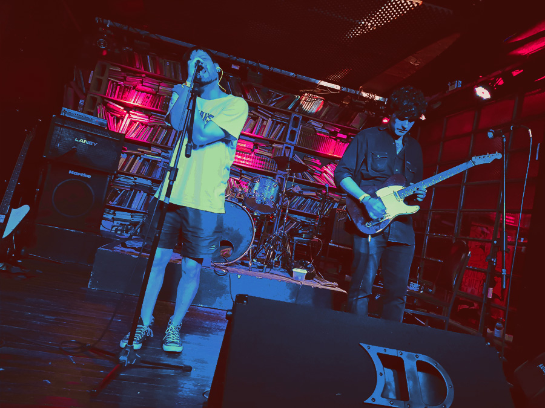
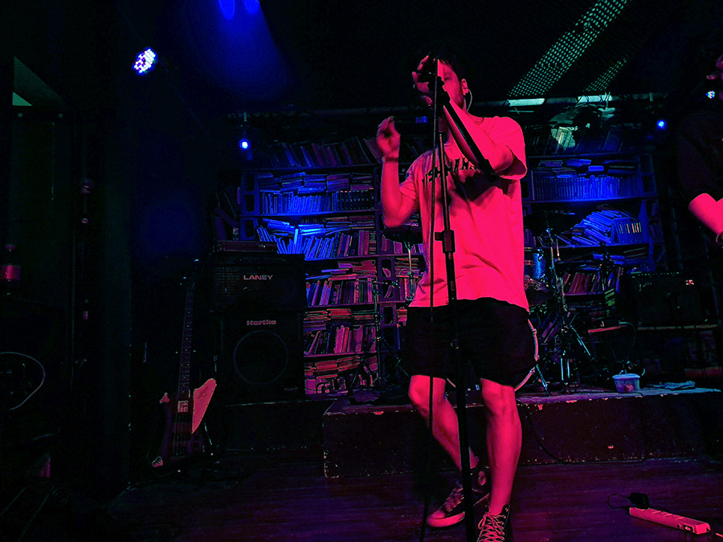
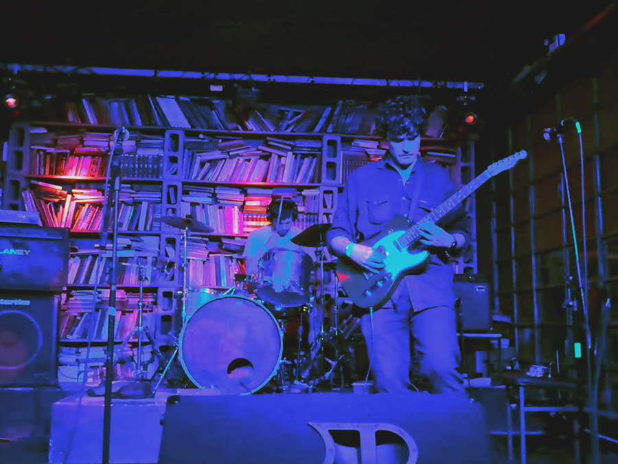
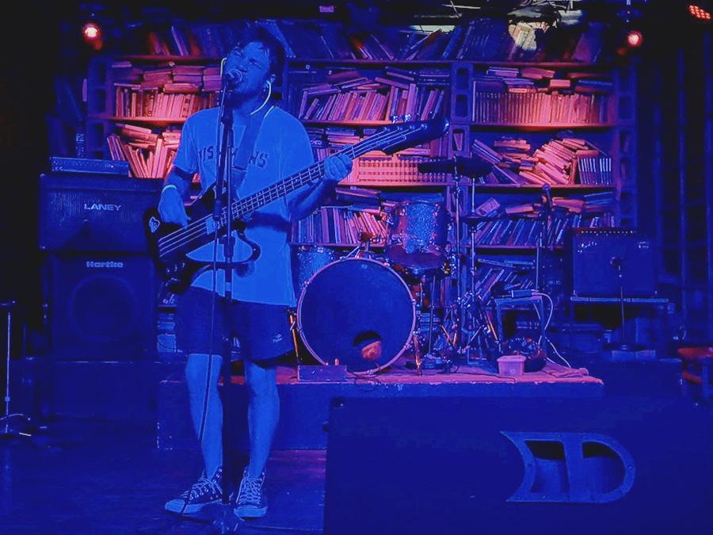

/ MAIS LES MACHINES
Mais Les Machines es el proyecto solista argentino de Germán Chervet, con la ayuda de las poderosas guitarras de Marcelo Vincenzi. La búsqueda de la experimentación y el desarraigo de las concepciones artísticas es el núcleo que mueve el proyecto. Actualmente, realizaron su debut en la Marclo Fest el 4 de octubre de 2025, presentando su primer álbum homónimo.




